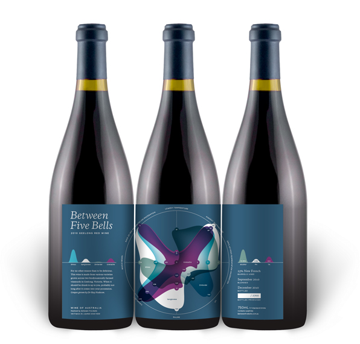
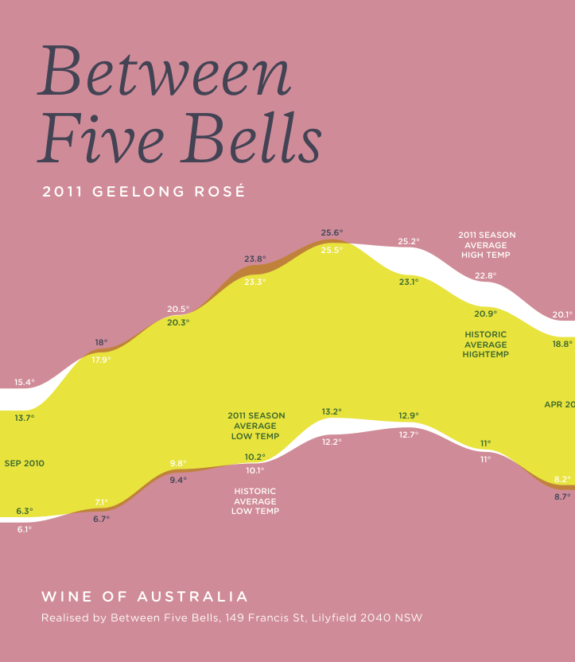
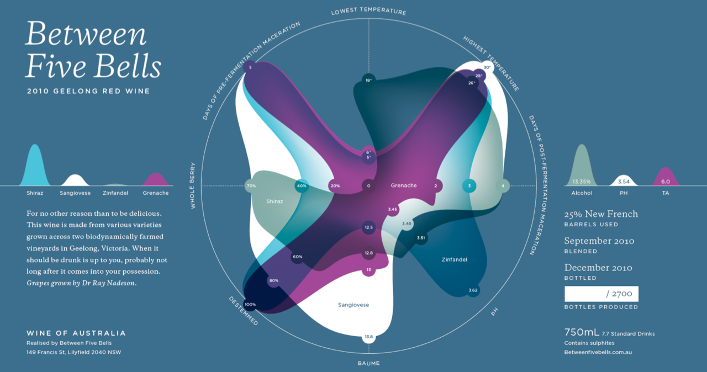
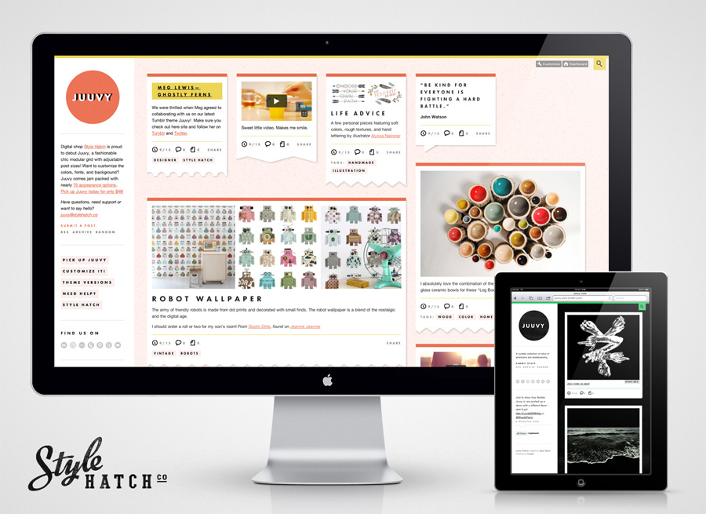
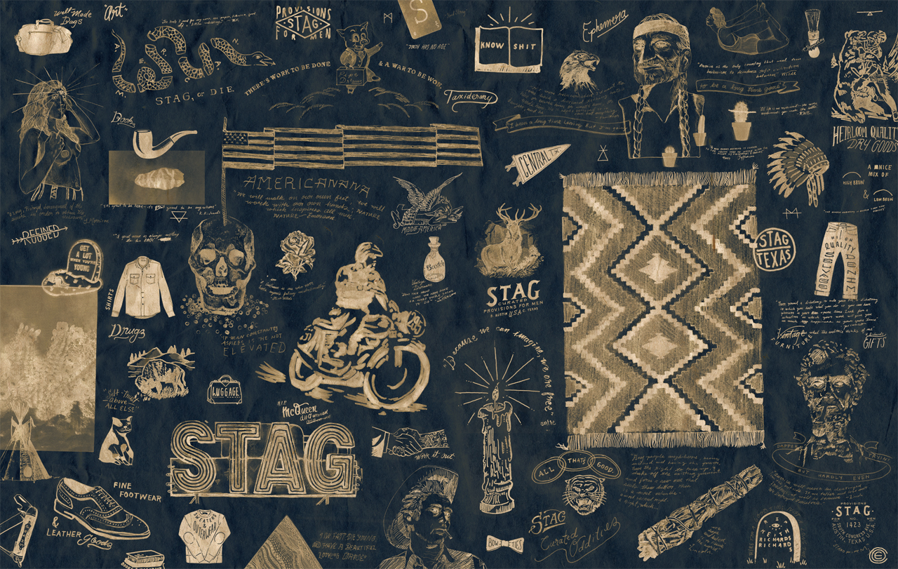
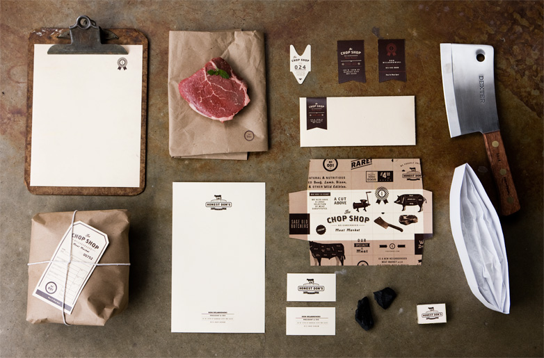
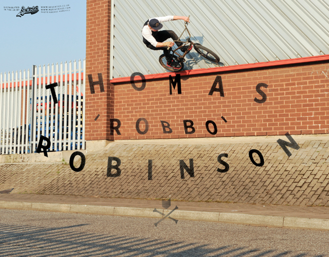
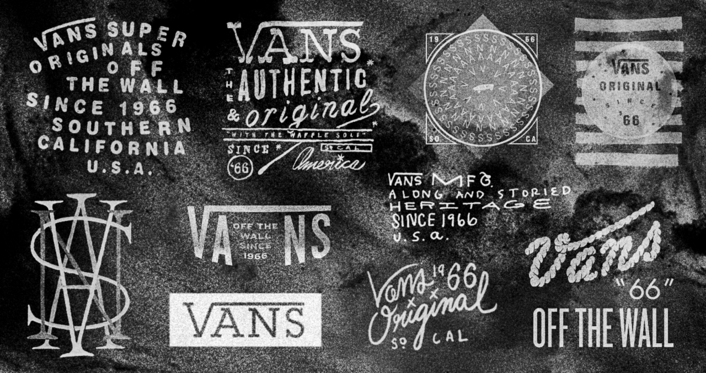
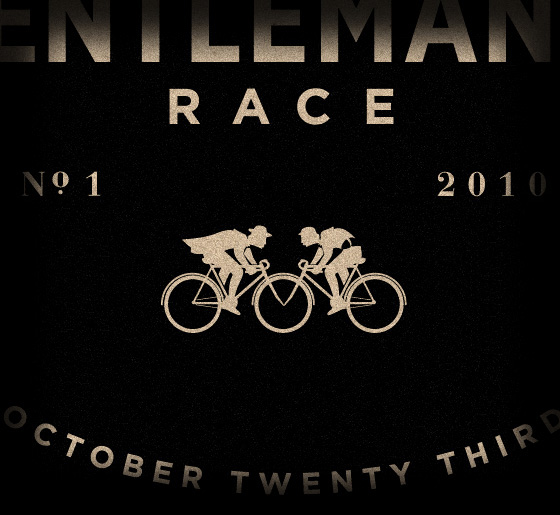

Don Draper pitches Facebook Timeline
Via Kottke
Don Draper pitches Facebook Timeline
Via Kottke
How can you not love an 8-bit rendition of The A Team, Mork and Mindy, Star Trek and others set to a chiptune track? Buenos Aires based animation and branding studio Punga created this piece for Italy’s Fox Retro station featuring the best of 70s, 80s and 90s American TV.
“Newsflash: Your idea probably sucks, and it doesn’t matter because your business will probably turn out to be something completely different.”
Paypal started out as a way to beam money from one Palm Pilot to another, of course after you connected your Palm Pilot to your computer and dialed into the internet. Flickr was born from a photo sharing feature inside a pointless online-game called “Game Neverending"
Just start the process of turning your idea into action and you’ll usually find your way along the journey.
Juuvy is oh-so juicy, like a big, plump orange. The pulp even gets stuck in your teeth to make the flavor last even longer. I’m talkin’ heavy pulp, not medium. Medium to no pulp is for free theme users.
The Virtual Biographers, from the Juuvy theme feedback page
This might my favorite review of one of our themes. We’re all about heavy pulp.



If I’m willing to buy a bottle of wine based on the typography alone, I’ll certainly buy wine with a data visualization graph made with Processing. The visualization printed on the label is unique to each wine based on eight characteristics, and no two labels will ever be the same. Fantastic work by Nicholas Feltron.
Over a year after sharing a bit of process, the fruits of David Fesq’s labor and the label I designed for his wine are now available in Australia.
It takes guts to fly down a mountain at 50 miles per hour on a tricycle without breaks. Next up… human sling shot slip and slide.
The House that Nightmares Built
Buyer's Remorse
Party Like it's 1999
Zoing!
Perfect blend of color, composition, pop culture and humor. Check out more of Andrew B. Meyers stellar photography.
“When you have the good fortune to have success in your life that is precisely the time you should reinvent yourself. You should go right back to zero as though nothing had happened and start over. Because you can get real stale. You can fall in love with yourself or get to that danger point when you could ride on that success or try to repeat it.”
— Robert Redford
Wise words. I quickly threw together a desktop image with this quote as a reminder to create, reinvent, repeat. Feel free to download the desktop image at 2560x1440px.
Via Surfstation
IDEO looks at the ways that the Chinese culture and business environment is redefining 服务 or service. This article provides great examples of reassurance, abundance, measured and adaptive service that any western business can learn from.

Digital shop Style Hatch is proud to debut Juuvy, a fashionable chic modular grid with adjustable post sizes!
I was thrilled when Meg Lewis (Ghostly Ferns) agreed to collaborating with us on the design of Juuvy. She did a fantastic job! Make sure you check out her site and follow her on Tumblr and Twitter.
Like all of our other premium Tumblr themes, Juuvy comes jam packed with features that allow you to customize virtually everything including the colors, layout, typography, and adding social features. Check out the Juuvy demo site and Juuvy York for a different dark flavor. Pick up Juuvy on Tumblr for $49, and as always feel free to email us questions!
Fewer words = better.
Jesse Phillips, from the new book Outspoken





I can’t get enough of this urban, rugged americana design aesthetic. Austin-based visual designer Caleb Owen Everitt nailed it. I’m not sure if he’s still there, but he certainly left his mark on some of PTARMAK’s older project.


“Great Scott!” Nike is finally releasing the shoe that every kid in the 80s dreamed of owning. Unfortunately the auto-laces feature doesn’t come out until 2015. With a limited run of 1,500 shoes, Nike is auctioning them off on eBay to benefit the Michael J Fox Foundation for Parkinson’s Research. There is only 10 hours to go on some of the first shoes being auctioned, and the bids are already hitting $6,000.
Now where is my hoverboard?
“Shuush is a prototype web based Twitter reader that ranks your followers on frequency of tweets. It aims to amplify the people that don’t usually get heard, and scale back those with frequent updates.”
I’m thrilled to know that my frequency is ranked at a tolerable 5 out of 11 for @newezra. Created by BERG design consultancy
Set in the North Sea, Chris McClean & Mark Waters captured the stunning landscape and surf for their entry into the London Surf Film Festival.
Follow designer, artist and director Chris McClean on Tumblr.
Great write-up by Fast Company on Tumblr’s lean and amazing design team a.k.a. the amazing Peter Vidani. By the way, Tumblr is hiring a designer.

Yesterday our 10th premium theme Verge went live live on Tumblr! Verge is a unique side scrolling theme with individual post width control, similar to Inspire Well. Just add “xs", “xx" or “xl" tags to each post to set the widths to small (250px), medium (500px) or large (620px). Also, if you want to switch things up with a dark theme you can switch Verge to a black mode in the Appearance settings. More details on the features…
I’m extremely happy how this collaboration with designer Nick Jones turned out. As I was building the theme out I wanted to make sure the theme was full of small details that make Verge feel unique. For the ribbon style page titles I used Paravel’s Lettering.js typography plugin to handle the correct padding on line breaks and positioning of the corner turns. Using media queries to target mobile devices Verge looks beautiful on both an iPhone and iPad. Also, throughout the theme you’ll notice a number of subtle animated elements that are powered by CSS3 animations and occasionally triggered by jQuery.
If you have ideas, suggestions or questions let us know - verge@stylehatch.co
A designer who does not write markup and css is not designing for the web, but drawing pictures.
Andy Rutledge, Web Design is Product Design